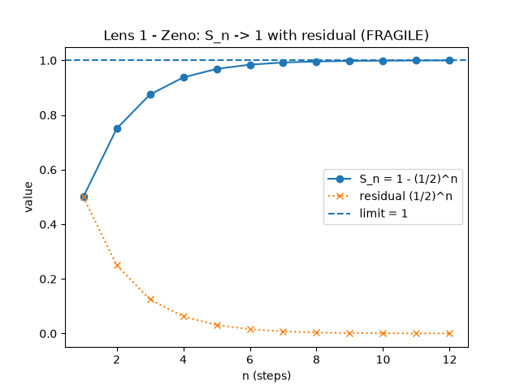

Does Zeno’s paradox mean you never arrive?
No. No finite half-step in this repo lands on the endpoint. The infinite sum of those steps is exactly 1, and at speed 1/2 the arrival time is exactly 2.

The short answer
Zeno’s dichotomy says that to finish a trip you must first cover half of it, then half of what is left, and so on. After k of those steps the crossed fraction in both codebases is Sₖ = 1 − (1/2)ᵏ. That quantity is always short of 1 for a finite k. The infinite sum is not short of 1. Those are different statements, and the tests pin both.
So the paradox does not mean the trip never finishes. It means you should not look for a finite step whose position is exactly the endpoint. The Go transport makes that operational: it delivers when the leftover gap is within a positive tolerance, and it refuses to deliver when that tolerance is zero.
What the Go transport checks
In zeno-protocol/zeno/math.go, Progress(k) returns
1 - math.Ldexp(1, -k), which is 1 − 2⁻ᵏ, and
Residual(k) returns 2⁻ᵏ. TestProgressNeverReachesOne
requires Progress(k) < 1 for k in {1, 2, 5, 10, 30, 52}, and requires
1 - Progress(k) to match Residual(k) within 1e-15.
TestProgressGeometricSeries checks that adding the step sizes
1/2 + 1/4 + … + 1/2ᵏ reproduces Progress(k) for k from 1 through 20.
Delivery is not “progress equals 1”. Transport.Send sets
Delivered only when Epsilon > 0 and the residual is less than
or equal to that epsilon, and only that packet carries the payload.
TicksForEpsilon returns ceil(log2(1/eps)) for eps in (0, 1),
returns 1 when eps is at least 1, and returns math.MaxInt when eps is 0 or
negative. TestTicksForEpsilon pins the pairs 0.5 → 1 tick, 0.25 → 2,
0.1 → 4, 1e-3 → 10, and 1e-6 → 20, and checks that the residual at that tick
is actually within epsilon. TestSendDelivers sends with epsilon 1e-6 and
MaxTicks 64 and expects the original message back in exactly 20 ticks.
TestSendPureParadoxNeverDelivers sends with epsilon 0 and MaxTicks
20: Delivered stays false, the run uses all 20 ticks, and the residual equals
Residual(20).
What the exact-fraction lens checks
gojo_infinity.core.zeno.partial_sum(n) is the exact fraction
1 − (1/2)ⁿ. test_partial_sums_exact_fractions pins the first eight
values at 1/2, 3/4, 7/8, 15/16, 31/32, 63/64, 127/128, and 255/256.
test_geometric_sum_is_exactly_one requires zeno_series_sum() to be
the fraction 1. total_arrival_time returns 1/speed.
test_arrival_time_series_converges_finite pins speed 2 → 1/2, speed 1 → 1,
and speed 1/3 → 3. The speed 1/2 case is the CLI line
“Total arrival time at speed 1/2 = 2 -> FINITE.”
test_cli.py asserts the substring “Total arrival time at speed 1/2 = 2”.
The leftover gap stays positive in exact arithmetic. residual(1075) equals
1/2¹⁰⁷⁵ and is strictly greater than 0, including at the point
where 0.5 ** 1075 underflows to 0.0 as a float.
epsilon_N(1/1000) returns N = 10 under a strict inequality:
(1/2)^N < 1/1000 and (1/2)^(N−1) ≥ 1/1000, so (1/2)^9 is still at least
1/1000. That N matches the Go tick count for 1e-3,
but the two predicates are not the same on a pure power of one half: Go accepts
residual ≤ eps, so TicksForEpsilon(0.5) is 1, while the Python oracle asks
for a residual strictly under eps. The lens verdict string is Fragile: the gap
never closes at a finite n, and the traveler still arrives because the time series is finite.
Where this is implemented
The Go half-step transport, including the epsilon rule and the pure-paradox mode that never delivers, is Zeno Protocol. The same series as an exact fraction, with the finite arrival time at speed 1/2, is lens 1 of Gojo’s Infinity. The plot on this page is one of the rendered figures in the gallery.
Honest caveat: the Go program is an in-process teaching transport over a channel, not a network protocol. Packets on a real network do not move by halving a remaining distance. The numbers above are what those two test files pin, not a claim about a physical runner beyond the series.